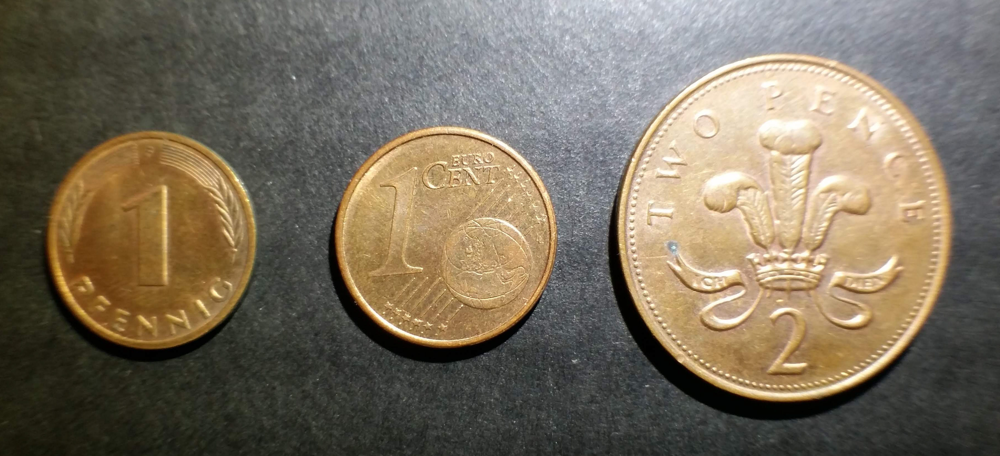

How it started
¢ When I was a child, I received a jar of pennies from a friend of my grandparents. I was probably about five or six at the time, and for a while, all I did with the coins was have them as a childhood curiosity. Eventually, I decided to see what exactly was in the jar. I counted the pennies and stacked them up by year. I decided that, since I had such a good headstart, I should try to get a penny from each year for as far in each direction as I could. That was my first coin collection--a penny for every year.
The next step
In 1999, the United States Mint introduced the State Quarters Program, and I was intrigued. They announced new, collectible quarter designs--five a year for the next ten years. Lots of people got into collecting these new coins, and I decided to be one of them. It was as exciting as coin collecting could get! Every time I got change back from a purchase, I examined it , always looking for the next new quarter to add to my collection.
The collection goes international!
(Pfennig, Cents, and Pence)
DM The next big addition to my collection was a set of German coins from my high school exchange trip to Germany. It was just a couple years before they changed to using Euro instead of Deutsche Marks, so I was lucky to get a set of the old coinage before it was retired.
€ When I returned to Germany after college, the country had changed over to Euro. The backs of the new currency had a number of different designs based on the country of origin of the coins. Euro from Germany have an eagle on the back, and I got a set of the new coins to add to my collection.
£ While I was in Germany, I was able to travel to England, where I collected a set of British coins. One interesting thing about British coins is that they feature a portrait of the reigning monarch, and they are updated every so often, so a person can see the queen at different ages.
Special additions
- My oldest coin overall: a penny from 1888
- The oldest coin found in circulation: a 1909 penny
- A 1943 wartime steel penny
Current collection
I finished my state quarters collection in 2008, and added the six D.C. and U.S. Territories Quarters in 2009. My penny-a-year collection spans from 1958 to present, and I'm always on the lookout for new old wheat pennies. The current quarter program from the Mint features national parks, and I am working on gathering them as they come out.
Looking forward
One thing that I have noticed has changed since I started collecting is that it is harder to find the coins because I pay with cash less often. Who knows how long it will be before my coin collection becomes a quaint reminder of a former time! So I guess maybe it's not true that the only constant is change.